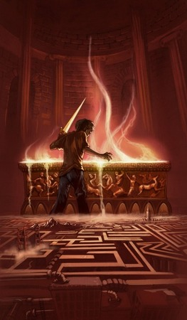

First volume of the Percy Jackson and the Olympians saga, The Money Thief
rays was among the first places on the list of the most popular series
sold from The New York Times. The author combines legends of
Greek mythology with adventures in the 21st century. In them, the gods of
Olympus are still alive, they still fall in love with mortals and generate
children half gods, half human, like the heroes of Greece
old. Marked by destiny, they hardly go beyond
adolescence. Few manage to discover their identity.
Problem boy Percy Jackson is one of them. Have experience
strange places in which mythological gods and monsters seem to jump out of
pages of books straight into your life. Worse than that: some
These creatures are quite irritated. A precious artifact
was stolen from Mount Olympus and Percy is the prime suspect. For
restore peace, he and his friends – young modern heroes –
will have to do more than capture the real thief: they will have to
elucidate a betrayal more threatening than the fury of the gods.
In this second adventure in the Percy Jackson and the Olympians series,
Percy and his friends are in search of the Golden Fleece, the only
magical artifact capable of protecting your place from destruction
favorite and, until then, the safest in the world: the Camp
Half Blood.
A call from his friend Grover leaves Percy ready for another
mission: two new half-bloods have been found, and their
ancestry is still unknown. As always, Percy knows that
will need to rely on the power of their hero allies, their loyal
sword Riptide... and a little lift from his mother. What they
still don't know is that the young people discovered are not the only ones in
danger: Kronos, the Lord of the Titans, devised one of his plans
more treacherous, and our heroes will be easy prey. A monster
ancestor has been awakened - a being with enough power to
destroy Olympus -, and Artemis, the only goddess capable of
find it, it disappeared. Percy and his friends only have one
week to rescue the kidnapped goddess and solve the mystery
that haunts the monster she hunted.
Extremely fun and action-packed, this third adventure in the series
puts our hero and his allies face to face with the greatest
challenge of their lives: the terrifying prophecy of the Titan's curse.

The Battle of the Labyrinth
Mount Olympus is in danger. Cronos, the wicked titan who was
dethroned and torn to pieces by the twelve Olympian gods,
prepares a triumphant return. The first step of your troops will be
attack and destroy the training camp of the heroes, sons of
gods with mortals, who since Ancient Greece have fought on the line of
forward in defense of the Olympians.
To ensure that the refuge of demigods, the Camp
Half-Blood, don't be invaded, Percy Jackson, Tyson, Annabeth and
Grover are assigned to an important mission: stop the forces
of Kronos before they approach the camp, in the tangle of
corridors of the feared Labyrinth of Daedalus – an endless
underground universe that, at every turn, reveals the most
terrifying surprises.
The half-bloods spent the entire year preparing for the
battle against the Titans, and they know that the chances of victory are
small. Kronos' army is more powerful than ever, and
each new god or demigod that joins the cause grants more strength
to the vengeful titan.
While the Olympians are busy containing the monster's fury
Typhon, Cronos advances towards New York City, where the
Mount Olympus is precariously guarded. Now just Percy
Jackson and his army of heroes can stop the Time Lord.
In this fifth and final book in the series, the combat intensifies and the
The world we know is about to be destroyed. The fate of
civilization is in the hands of the demigod announced in the ancient
prophecy, and Percy is close to turning sixteen – the
The question is: will the hero be able to make the right decision or not?